AI 에이전트가 바꾼 코딩
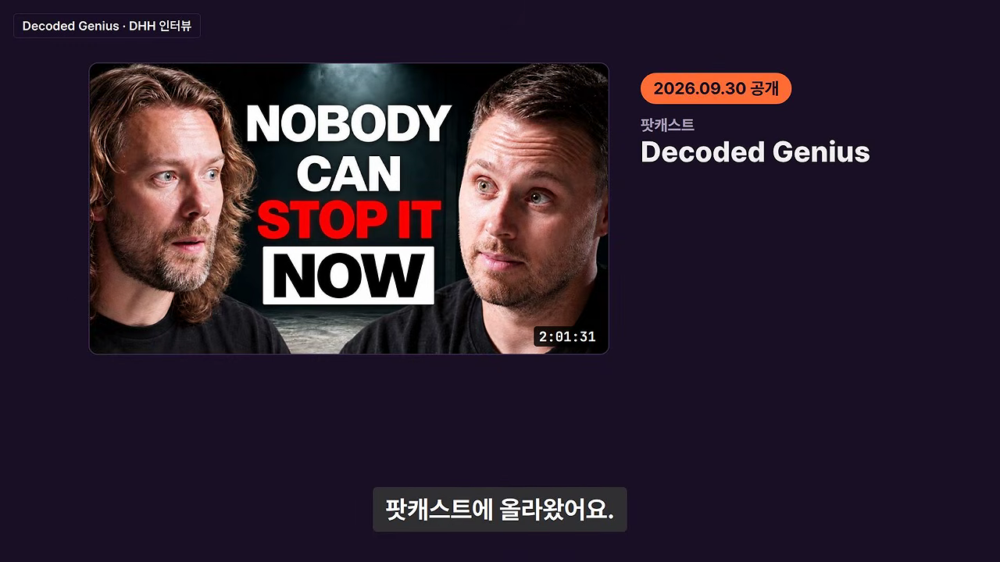
DHH는 루비 온 레일즈를 만들었고, 베이스캠프와 HEY를 만드는 37signals의 공동 소유주이자 CTO예요. 인터뷰는 AI 이야기로 시작해요. 그는 2025년 12월 초까지만 해도 새 칸반 도구 Fizzy를 거의 전부 손으로 짰어요.
당시 AI 코딩은 편집기에서 다음 줄을 짐작해 채워 주는 자동완성이었어요. DHH는 이 방식을 처음부터 싫어했어요. 생각을 끝내려는데 옆에서 자꾸 끼어드는 사람 같았거든요.
일주일 만에 뒤집힌 생각
그런데 일주일쯤 뒤 새 모델이 나오고, 모델을 감싸 일을 시키는 하네스 도구들이 쓸 만해졌어요. 그가 꼽은 건 OpenCode, Pi, Codex, Claude Code예요. 이제 자동완성이 아니라 "이거 해 줄래?" 하고 임무를 맡기면 AI 에이전트가 알아서 코드를 써 와요. 그해 말 그 코드가 그가 코드베이스에 남기고 싶은 수준이 되자, 생각이 180도 바뀌었어요.
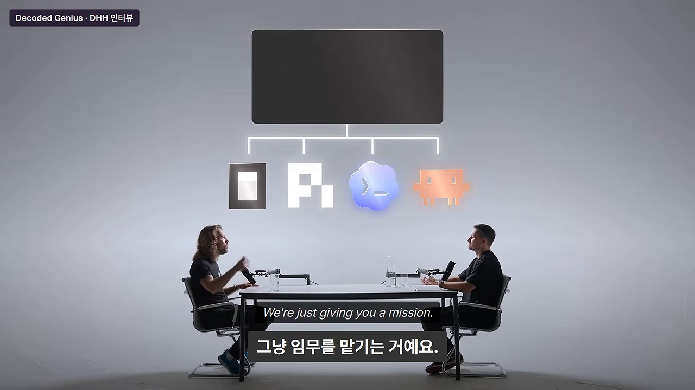
관리자가 아니라 생체공학 팔
DHH는 에이전트를 부리는 일이 사람 개발자를 관리하는 일과 같을 거라 걱정했어요. 그는 남을 거치기보다 직접 손을 더럽히는 걸 좋아하거든요. 실제로 해 보니 전혀 달랐어요. 사람 팀은 큰 기능 하나에 몇 주에서 몇 달이 걸리지만, 에이전트는 몇 분, 길어야 몇 시간이면 결과를 보여 줘요.
피드백 루프가 짧아지니 일하는 방식 자체가 바뀌었어요. 그는 이걸 "생체공학 팔"에 빗대요. 남에게 다 넘기는 게 아니라 내 팔이 늘어나 훨씬 큰 힘을 쓰는 느낌이라는 거예요. 지금은 새 코드를 모두 프롬프트로 시작하고, 에이전트가 엇나갈 때만 직접 고쳐요.
손코딩을 좋아하던 사람들
요구사항에는 별 관심 없이 코드를 짜는 과정 자체를 좋아하던 개발자들은 힘들어하고 있어요. DHH는 그 상실감에 공감해요. 1년 전만 해도 귀한 자원이라 큰돈을 받았는데, 이제 덜 필요한 사람이 되어 가니까요.
하지만 그는 원래 프로그램이라는 결과가 갖고 싶어서 프로그래밍을 배웠대요. 그 뒤 수십 년 기술을 갈고닦으며 과정을 좋아한다고 스스로를 설득했을 뿐이고, 에이전트 덕에 원래 출발점으로 돌아왔다고 해요. 6개월 전엔 아무도 터미널이 에이전트의 중심이 될 줄 몰랐어요. 그러니 2년 뒤는 물론 6개월 뒤도 겸손하게 봐야 한다는 게 그의 말이에요.
투자 없이, 작게
진행자는 DHH를 이렇게 소개해요. 쇼피파이, 깃허브, 에어비앤비가 쓰는 프레임워크를 만들었고, 25년 동안 투자자 통제 없이 수천만 달러의 이익을 낸 회사를 일궜다고요. 첫 질문은 왜 벤처캐피털 대신 부트스트래핑을 택했냐는 거예요.
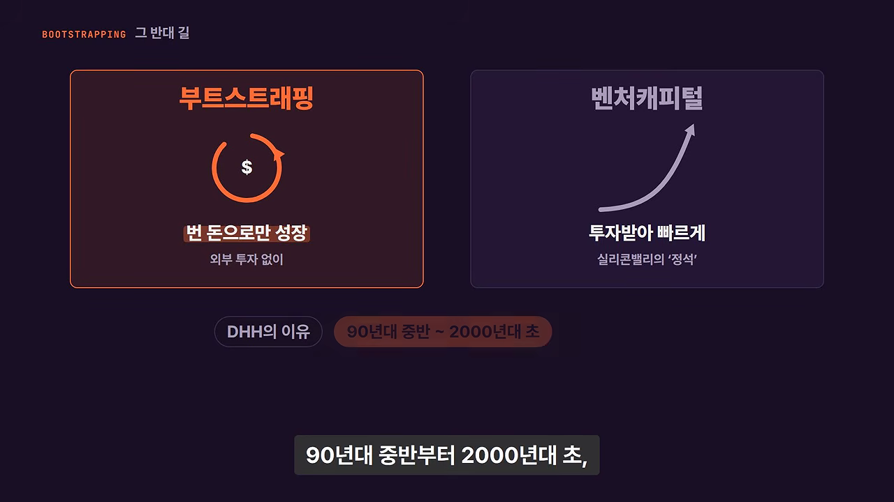
닷컴 붕괴가 남긴 흔적
90년대 중반부터 2000년대 초까지 투자자들은 '인터넷' 소리만 나면 돈을 쏟았어요. 수익 모델이 있든 없든요. 그 카드집이 무너진 닷컴 붕괴를 DHH와 제이슨 프리드는 직접 봤어요. 그는 대공황을 겪은 세대가 수십 년 뒤에도 버터를 아끼는 것처럼, 그 경험이 평생의 흔적이 됐다고 말해요.
큰돈을 받았다가 무너지면 해고와 절망이 따라와요. 그래서 그는 다른 길을 찾았어요. 조금 느리게 크더라도 번 만큼만 쓰면서, 제품에 대한 야망은 크게 갖는 거예요. 소프트웨어는 공장이 필요 없으니 몇 사람이 앉아 코드만 쓰면 된다고 봤어요.
| 부트스트래핑 | 벤처캐피털 | |
|---|---|---|
| 돈의 출처 | 번 돈으로만 성장, 외부 투자 없음 | 투자를 받아 빠르게 성장 |
| 당시 분위기 | 드문 선택 | 실리콘밸리의 '정석', 목표는 100명 규모 |
| DHH가 본 위험 | 성장이 느릴 수 있음 | 무너지면 해고와 절망, 제품은 과하게 복잡해짐 |
7명이 제품 4개를 굴리던 시절
DHH는 지금도 파는 베이스캠프의 기술 쪽을 혼자 만들었어요. 디자인은 제이슨과 라이언이 맡았고요. 이 제품은 22년 동안 수억 달러 매출을 냈어요. 2000년대 중반 37signals는 7명이 큰 제품 4개를 운영하며 해마다 새 제품을 냈어요.
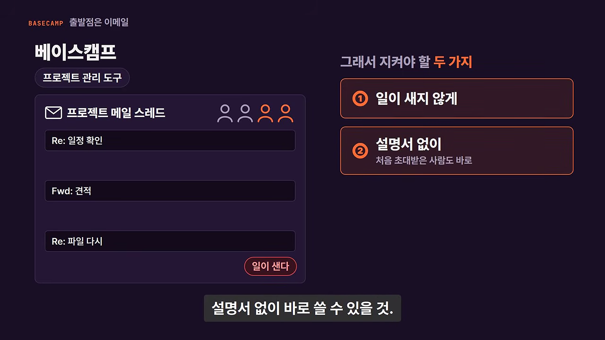
그는 큰 회의를 가장 싫어해요. 12명이 모이면 소통 비용과 핑퐁만 늘어요. 대부분의 시간은 문을 닫고 혼자 일하고, 가끔 두세 명이 만나면 충분하다는 거예요. 사람이 많은 회사는 돈만 낭비하는 게 아니라 해로운 제품을 만든다고도 봐요. 대부분의 사람에게 필요 없는 기능이 잔뜩 붙은 소프트웨어 말이에요.
제약이 무기예요
DHH는 자기 자신을 못 믿는대요. 100명짜리 팀이 있으면 아이디어 10개로 추려야 할 걸 50개, 70개를 다 하려 들 거라는 거예요. 위대한 디자이너와 예술가도 아끼는 아이디어를 버려야 단순하고 일관된 결과에 닿아요. 무한한 자원을 주면 그들도 일을 망친다고 해요.
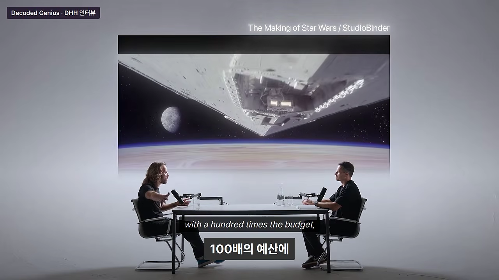
사람을 10배 늘린다고 10배 빨라지지도 않아요. 소통 부담 때문에 오히려 느려지기 쉬워요. 그는 AI 시대에 이 문제가 다시 커질 거라고 봐요. 구현이 더 이상 병목이 아니면 모든 아이디어를 다 만들 수 있는데, 그러면 제품은 엉망이 된다는 거예요.
You don't want unlimited time and resources. You want constraints.
무한한 시간과 자원을 바라면 안 돼요. 제약이 있어야 해요.
— 원래 인터뷰 (이 영상 18:34 부근)
지금 창업한다면
진행자가 지금도 투자 없이 같은 길을 갈 수 있냐고 묻자, DHH는 모든 성공은 그 시대의 산물이라고 답해요. 똑같이 할 순 없지만 교훈은 많고, 많은 부분은 오히려 쉬워졌대요.
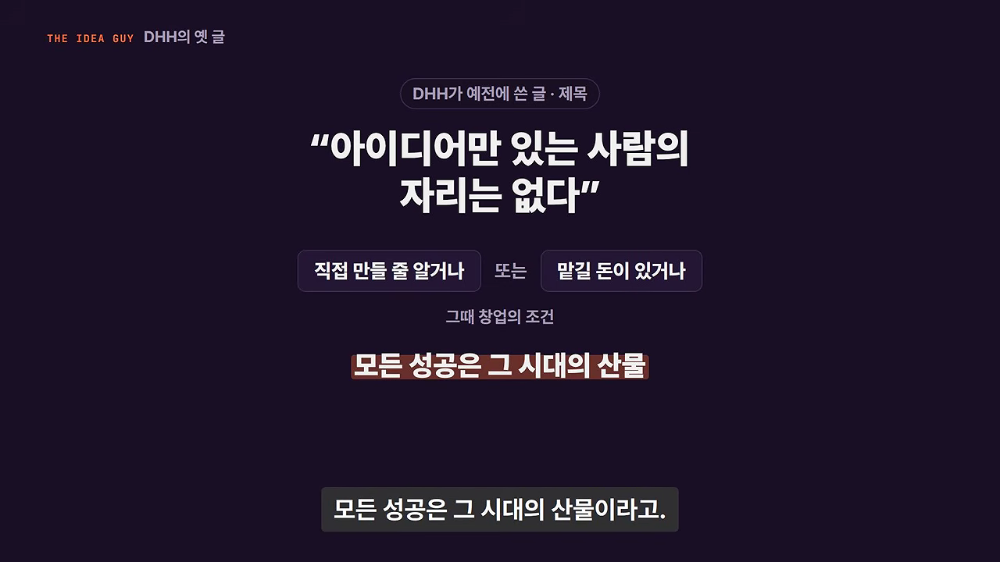
구현이 비쌌던 시절엔 둘 다 없는 사람은 말로 개발자를 꼬드겨 공짜로 일을 시켜야 했어요. 그는 그게 사기에 가깝다고 봤어요. 이제는 달라요. 월 20달러짜리 Claude 구독만으로 아이디어만 있는 사람도 시제품을 만들어 사업성을 확인할 수 있어요. 창업의 문이 새로운 계층에게 열린 거예요.
대신 누구나 시작하니 경쟁이 훨씬 치열해졌어요. 아이디어의 질, 복제를 막는 방법, 관심을 끌 각도가 더 중요해졌어요. 좋은 제품만 만들면 사람들이 알아서 찾아오던 25년 전과 달리, 지금은 출시해도 반짝 반응 뒤 조용해지기 쉬워요. 진행자가 배포와 제품 중 하나를 고르라고 하자, 그는 배포를 골랐어요. 배포가 좋으면 적어도 그럭저럭 되는 사업을 만들 확률이 높고, 나쁜 배포에 그저 그런 소프트웨어로는 이제 아무것도 안 된다는 거예요.
제프 베조스와 세컨더리
37signals는 회사에 투자금을 넣은 적이 없어요. 필요가 없었거든요. 베조스가 관심을 보였을 때 회사는 이미 비용과 성장 계획을 다 감당할 만큼 벌고 있었어요. 닷컴 붕괴를 본 뒤라 VC라면 거의 질색하던 때이기도 했어요. 베이스캠프가 뜨자 VC 40여 곳이 연락해 왔지만 다 거절했대요.
왜 베조스만은 만났을까요?
DHH는 평판도 일종의 배포라고 말해요. 다른 사람과는 하지 않을 대화를 평판 있는 사람과는 하게 되거든요. 아마존이 아직 적자를 내던 때였지만, 베조스가 특별한 걸 만든 건 분명했어요. 자본을 굴리는 게 일인 VC보다, 맨바닥에서 회사를 일군 사람과의 대화가 훨씬 흥미로울 거라 봤어요.
두 사람은 거절할 생각으로 터무니없는 조건을 내밀었어요. 보통의 피치덱 대신 종이 한 장에 핵심 지표 세 개와 '바보 같은 금액'만 적었어요. 통제권 없음, 기한 없음, 투자금 회수 보장 없음이었죠. 베조스 팀은 말이 안 된다고 했지만, 베조스는 지금 숫자로는 안 맞아도 걸어 보겠다고 했어요. 37signals가 낸 첫 책 『Getting Real』을 읽고 두 사람에게서 뭔가를 봤다는 거예요.
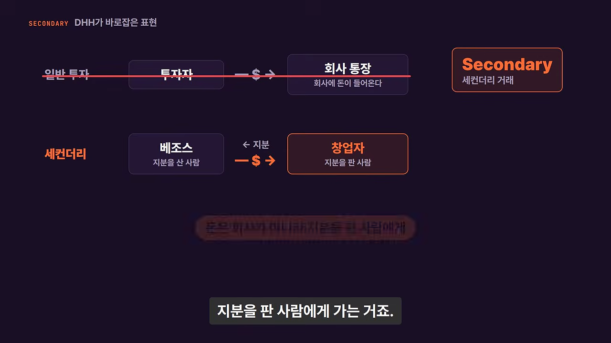
판돈 일부를 먼저 챙기다
이 거래는 세컨더리였어요. 두 창업자가 자기 지분 일부를 팔아 돈을 손에 쥔 거예요. 둘 다 부자가 아니었고, 실패하면 다시 남 밑에서 일할 처지였어요. 그런데 수백만 달러를 먼저 챙기고 나니, 이후 아무리 후한 VC 제안이 와도 흔들리지 않게 됐어요. 내년에 회사가 망해도 후회하지 않을 만큼은 이미 챙겼으니까요.
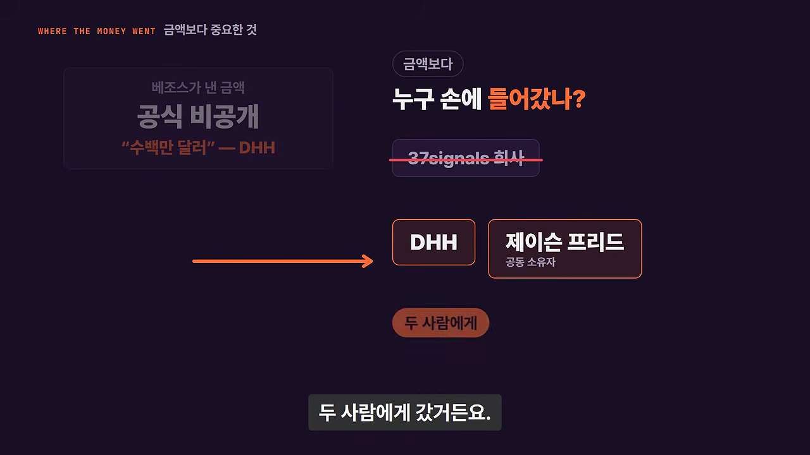
당시엔 큰 투자금이 전부 회사로 들어가는 게 보통이었어요. 그 돈으로 사람을 뽑고 마케팅에 쓰고, 안 되면 빈손이 돼요. 진짜 돈 맛을 봤다가 거품처럼 사라지니 혼자 실패한 것보다 더 나빠요. DHH와 제이슨은 일부는 우리가 갖고, 통제권은 하나도 내주지 않는 구조를 원했고, 베조스가 그 조건에 맞았어요.
그 뒤 관계는 그가 상상할 수 있는 가장 행복한 투자 관계였대요. 1년에 한 번쯤 고민거리를 들고 가면, 베조스의 조언은 대부분 "뭘 해야 할지 알잖아요, 그냥 하세요"였어요. 20년 가까이 지난 지금 그 지분 가치는 산 값의 몇 배가 됐어요.
베조스는 무엇을 봤을까요?
DHH는 베조스가 반항아들을 봤다고 생각해요. 기술 업계라곤 없던 2000년대 초 시카고에서, VC도 마다하고 혼자 다 만들겠다는 건방진 회사였으니까요. VC는 10억 달러짜리 회사가 될지를 보지만, 베조스는 이 사람들이 끝까지 밀어붙일 만큼 미쳤는지를 봤다는 거예요. 몇 년 뒤 베조스 쪽 사람에게 들으니, 같은 방식으로 투자한 회사들 중 37signals가 가장 잘된 편이었대요.
SaaS의 음악이 멈췄다
투자를 받을지 말지 판단하는 DHH의 기준은 단순해요. 공장을 짓거나 재고를 쌓는 것처럼 자본이 꼭 필요한 사업인가. 아니면 그냥 사람들 월급 줄 돈이 필요한가. 뒤쪽이라면 회의적이에요. 에이전트 덕에 아이디어가 통하는지 확인하는 비용이 크게 줄었으니까요. 20년 전에도 싸게 해냈는데 지금은 몇 배 더 그렇다는 거예요.
마법 같던 SaaS 계산법
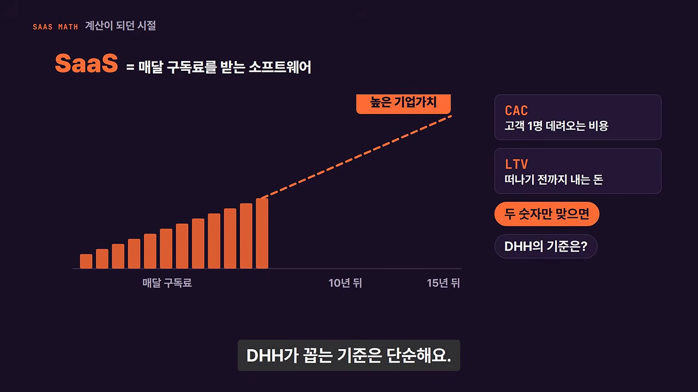
SaaS는 매달 구독료를 받는 소프트웨어예요. 매출이 매달 반복되니 계산이 쉬워 보였어요. 마케팅에 얼마를 넣고 CAC와 LTV의 비율이 맞으면, 이 매출이 10년, 15년, 20년 이어질 거라 그릴 수 있었어요. 그래서 다들 SaaS를 마법이라고 생각했어요.
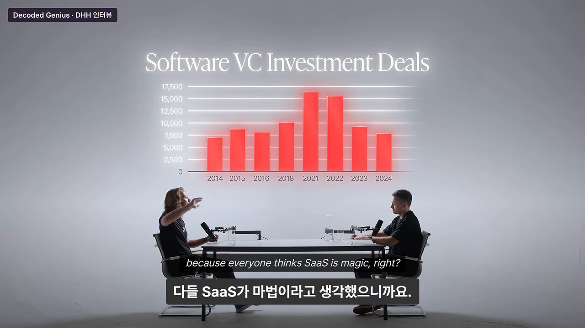
DHH는 우리가 소프트웨어 역사상 최고점을 막 지나왔다고 말해요. 그는 처음에 2001년이라고 했다가 곧이어 2021년의 가치평가가 정말 터무니없었다고 짚어요. 화면 그래프의 정점도 2021년이라, 2021년을 가리킨 말로 보는 게 자연스러워요.
그 음악은 멈췄어요
이제 SaaS 회사의 15년 뒤 반복 매출을 예측하는 사람은 없어요. AI라는 조커가 나왔고, 6개월 뒤 세상도 모르니까요. 멀리 내다볼 수 없으면 투자 논리가 흔들려요. 그래서 그는 지금이 순수 소프트웨어 회사가 투자받기엔 닷컴 붕괴 때만큼 나쁜 시기라고 봐요. 낮은 가치평가와 함께 "이 사업을 어떻게 지킬 거냐"는 어려운 질문을 받게 된다는 거예요.
예전에도 "마이크로소프트가 베이스캠프를 오피스 기능으로 넣으면 어쩔래?"라는 질문은 있었어요. 그때는 대답이 있었어요. 베이스캠프는 7명, 10명, 20명이 만들 수 있는 제품이지 5만 명짜리 회사가 만들 수 있는 제품이 아니었거든요. 이제는 훨씬 많은 사람이 도전할 수 있어서 경쟁이 늘어요.
그래도 그는 이걸 축복으로 봐요. 쉬운 VC 돈이 사라졌으니 다른 길을 찾아야 하고, 그게 바로 37signals의 이야기였어요. 시카고에선 어차피 투자를 받기 어려웠고, 실리콘밸리로 이사 가기도 싫었대요. 주어진 조건을 사랑하라는 거예요. 직접 해야 하는데, 좋은 소식은 그게 어느 때보다 쉽다는 거예요.
모든 결과를 받아들였어요
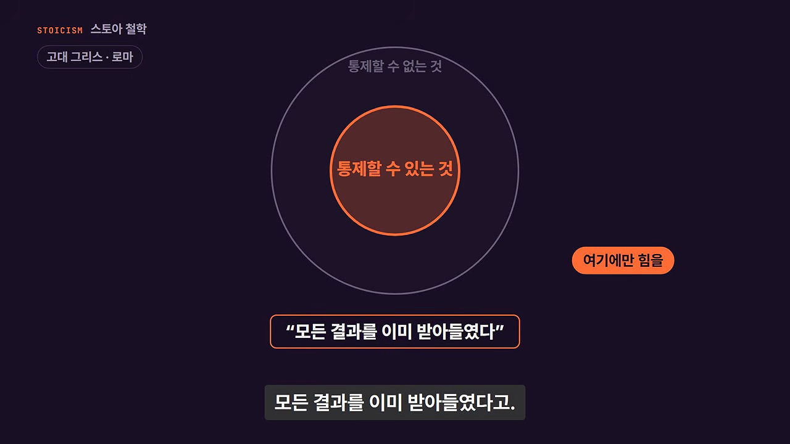
진행자가 힘든 시장에서 당신들은 뭘 하냐고 묻자, DHH는 이미 모든 결과를 받아들였다고 답해요. 베이스캠프는 2004년 2월, 페이스북과 거의 같은 날 나왔어요. 소프트웨어에선 영원 같은 시간이에요. 그 사업에서 기대할 수 있는 건 다 받았으니, 앞으로 오는 건 모두 덤이라는 거예요.
그는 아직 자기 몫을 못 챙긴 사람에겐 이 태도가 어렵다는 것도 알아요. 그래도 이건 스토아 철학의 오래된 관점이에요. 통제할 수 있는 건 좋은 소프트웨어를 만들고, 흥미로운 이야기를 나눠 관심을 얻는 일이에요. AGI가 연말에 SaaS 세계를 쓸어 갈지는 통제할 수 없어요. 그래서 그는 3개월 뒤 다 끝난다고 미리 상상해 보는 부정적 시각화를 하고, 그다음엔 걱정을 내려놓는대요.
진보는 되돌릴 수 없을까요?
야구 방망이로 데이터센터를 부숴 봐야 소용없다고 말한 DHH는 역사를 꺼내요. 기계를 부수며 일자리를 지키려 했던 러다이트 운동이에요. 그는 지금 여러 지역에서 데이터센터가 미움받는 게 같은 현상이라고 봐요. 데이터센터가 "내 일자리를 빼앗을 것"의 상징이 됐다는 거예요.
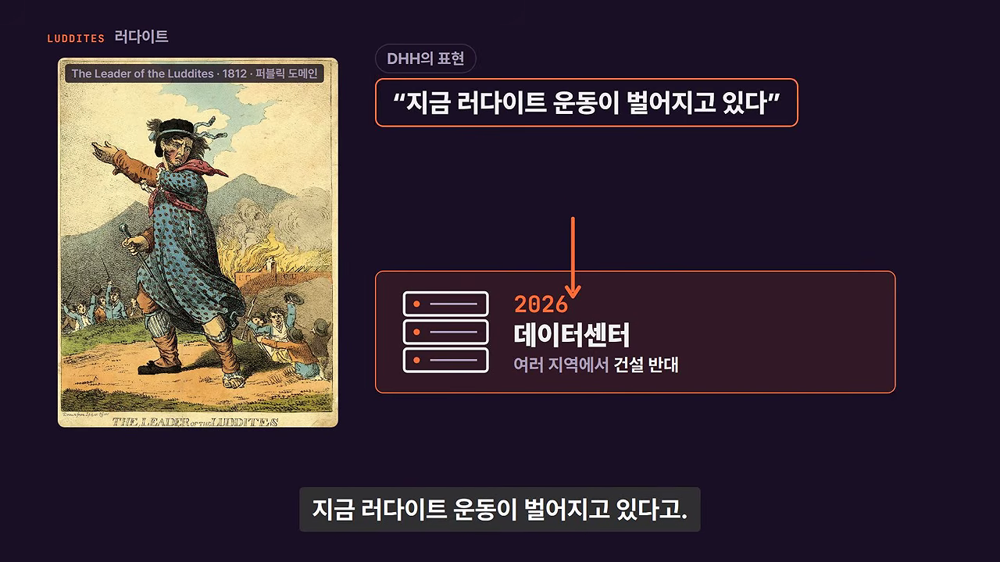
개인에겐 비극, 사회엔 필수
DHH는 일자리를 잃는 건 개인에겐 비극이지만 사회 전체로는 꼭 필요하다고 말해요. 생산성이 오른다는 건 같은 일을 더 적은 사람이 하거나, 같은 사람이 더 많은 일을 한다는 뜻이에요. 그리고 그게 번영의 원천이라는 거예요.
낙관론자들이 기대하는 흐름은 이래요. 소프트웨어를 만드는 데 사람이 덜 들면 값이 내려가고, 값이 내려가면 수요가 크게 늘어요. 그러면 에이전트를 부려 소프트웨어를 만드는 사람은 오히려 늘 수 있어요. 그는 역사 속 사례 몇 가지를 들어요.
| 사례 | 당시의 걱정 | DHH가 말하는 실제 결과 |
|---|---|---|
| ATM | 은행 창구 직원이 다 사라질 거예요 | 지점 여는 비용이 줄어 지점이 늘고, 소매 은행 직원이 오히려 늘었어요 |
| 트랙터와 농업혁명 | 농부의 일을 빼앗을 거예요 | 인구의 97%가 농사짓던 시절로 돌아가고 싶은 사람은 없어요 |
| 포드 모델 T | 마차꾼이 먹고살 수 없어요 | 기술을 거부한 나라가 번영한 적은 없어요 |
| 웨이모 자율주행 택시 | 뉴욕 택시 면허를 산 기사들이 망할 거예요 | 기술을 투표로 막으려는 시도는 늘 있어 왔어요 |
농부의 삶을 낭만적으로 그리며 염소나 치겠다는 개발자도 많대요. 하지만 해 보면 에어컨 나오는 방에서 키보드 두드리는 일이 얼마나 편한지 알게 된다고 해요.
뒤처지는 사람들은요?
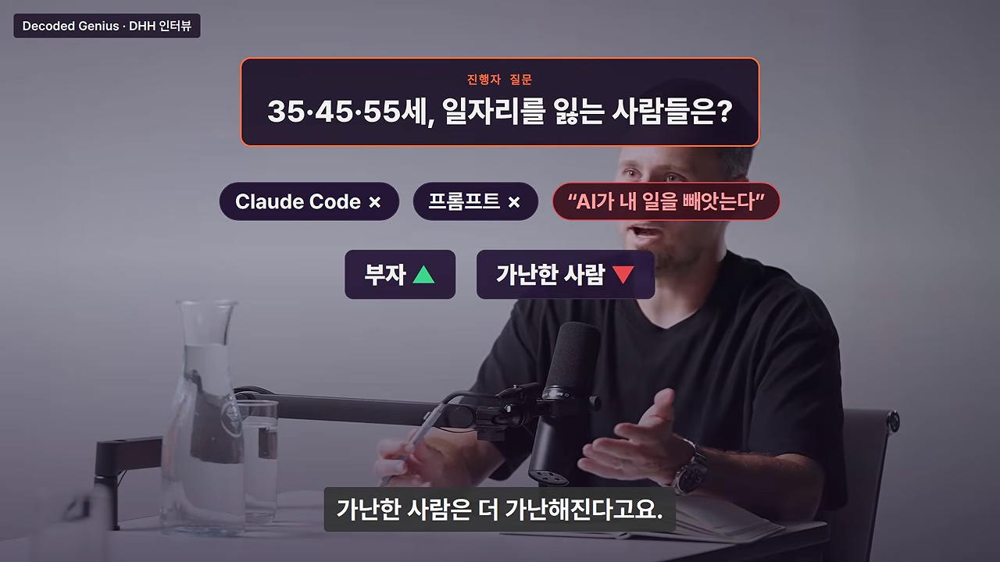
진행자는 정면으로 묻어요. 35살, 45살, 55살인데 Claude Code도 프롬프트도 모르는 사람이 일자리를 잃으면 어떡하냐고요. 부자는 AI로 더 부자가 되고 가난한 사람은 더 가난해진다고 느낄 거라고요.
DHH는 이 걱정에 공감해요. 미국과 유럽의 정치적 불만은 상당 부분 자유무역에 대한 엘리트의 가벼운 태도에서 왔다고 봐요. 공장이 아시아로 넘어갈 때 "아이폰이 싸졌잖아"라고 넘겼지만, 일자리와 집과 자녀 학비를 잃은 사람에겐 아무 위로가 안 됐다는 거예요. 경제 전체가 나아져도 대부분이 나아지고 있다고 느끼지 못하면 사회는 불안해지고, 결국 부자도 좋은 곳에서 살 수 없게 돼요.
그래도 멈출 수는 없어요
다만 걱정과 '그래서 뭘 할 수 있나'는 떼어 봐야 한다고 해요. 미국이 내일 AI를 금지해도 중국이 따라 멈추지는 않아요. 어떤 나라도 혼자 진보를 멈출 수 없고, 사회가 할 수 있는 건 방향을 살짝 트는 정도라는 거예요.
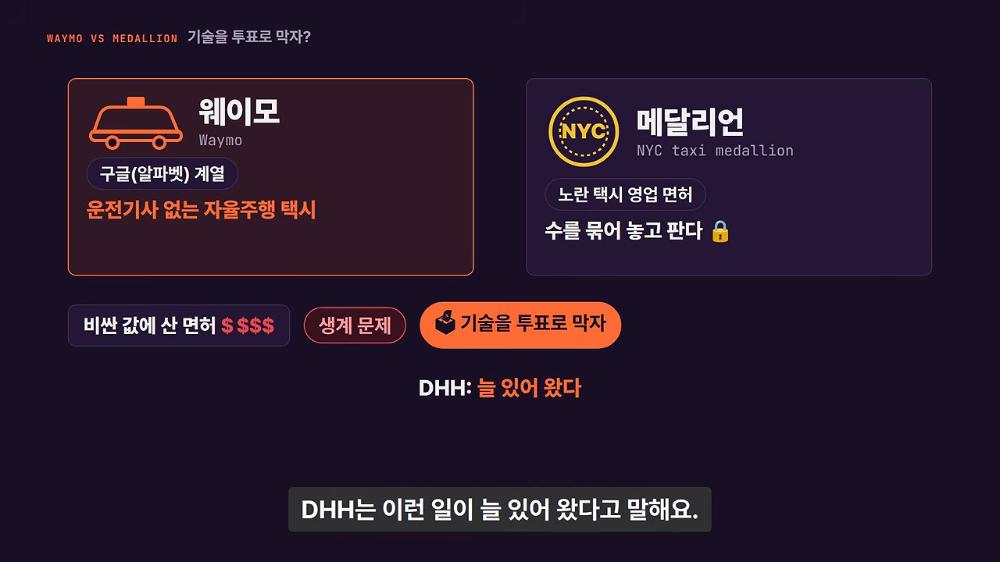
뉴욕에선 비싼 값에 메달리온을 산 택시 기사들 때문에 웨이모를 막자는 목소리가 있어요. DHH는 1910년 무렵 마차꾼들이 헨리 포드에게 모델 T 좀 천천히 하라고 외치는 장면과 같다고 봐요. 우리는 생각보다 역사에 영향력이 작아요. 어차피 올 거라면 매일 두려워하기보다 좋아하기로 했다는 게 그의 선택이에요.
그도 한때 흔들렸어요. 자동완성 시절 AI를 보며 감자 농사나 지을까 생각했대요. 그러다 일하는 방식이 바뀌고 에이전트가 하는 일을 보고 나서, 주어진 걸 최대한 활용하기로 마음먹었어요. 비참해지는 것도 행복해지는 것도 내 손에 달렸다는 거예요.
종말 이야기와 원자력이라는 실수
여기서 진행자가 처음으로 정면 반박을 해요. 자기도 엄청난 낙관주의자지만 걱정의 결이 다르다는 거예요. 그가 이야기를 나눈 AI 안전 연구자 로만 얌폴스키 같은 사람들은 일자리가 아니라 인류 멸종을 걱정해요. Anthropic, Google, OpenAI 같은 3~5개 회사가 가드레일 없이 인류 전체를 죽일 수 있을 만큼 강력한 걸 만들고 있다는 거예요.
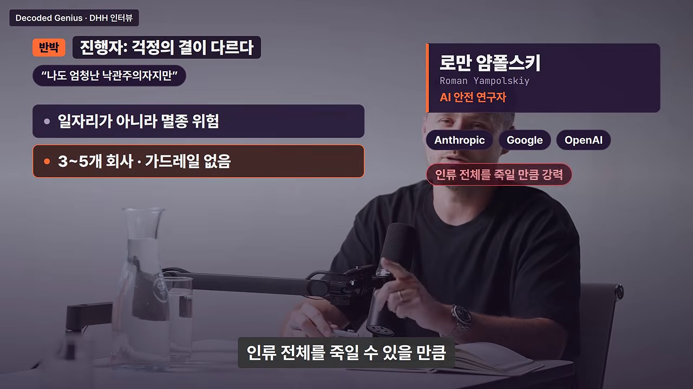
진행자는 아직 초지능에 닿지 않은 지금이 통제할 수 있는 때라고 덧붙여요. 그리고 자기도 아이가 있다고 말해요.
인류는 늘 종말 이야기를 해 왔어요
DHH는 먼저 조건을 달아요. 바꿀 힘이 있다고 믿는다면 걱정할 만하지만, 그런 힘이 없다면 늘 걱정하지 않는다고 손해 볼 게 없다는 거예요. 그리고 인류가 기록된 역사 내내 종말 이야기를 해 왔다고 짚어요.
| 종말 이야기 | DHH의 시각 |
|---|---|
| 종교의 심판의 날 | 초기 시대의 종말 서사는 곧 종교였어요 |
| 핵전쟁 | 버튼 위에 손가락을 올린 두 사람의 실수 하나로 끝날 수 있어 AI보다 더 가까운 위협이었어요 |
| 기후 위기 | 원인과 해법에는 불확실성이 커요. 아이를 낳지 말자는 데까지 가는 건 사는 방식이 아니에요 |
| AI 멸종 위험 | 꽤 많은 추론이 필요한 두려움이에요. AI를 만드는 사람은 진지하게 다뤄야 하지만 핵만큼 당장의 종말은 아니에요 |
그는 다시 스토아의 원칙으로 돌아가요. 투표처럼 큰일에 미치는 힘은 아주 작아요. 파리의 카페에 앉은 누군가가 미국의 핵무기 개발을 막을 수 없었듯, 우리도 AI 개발을 멈출 수 없어요. 그는 이 깨달음에 오히려 큰 해방감이 있다고 말해요.
진보를 늦춘 실제 사례, 원자력
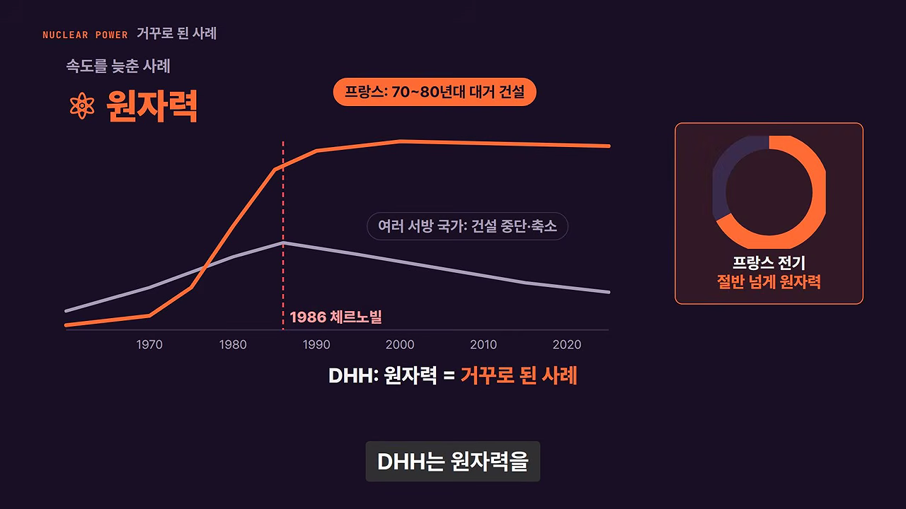
진보가 그냥 멈춘 사례는 거의 없지만, 거꾸로 늦춘 사례는 하나 있대요. 바로 원자력이에요. DHH는 원자력을 가장 친환경적인 기저 전력이라고 불러요. 한 사람이 평생 쓸 에너지를 만들고 남는 폐기물이 탄산음료 캔 크기라는 거예요. 그런데 서구는 히스테리에 가까운 반응으로 원전을 더 짓지 않기로 했어요.
그는 체르노빌로 죽은 사람보다 대기오염으로 죽는 사람이 훨씬 많다고 말해요. 80년대 프랑스처럼 원전을 계속 지었다면 지금 데이터센터 전력 걱정도 없었을 거라고 해요. 그래서 그는 진보의 편에 서야 하고, 이런 강력한 기술은 서방이 가져야 한다고 말해요.
모든 건 트레이드오프예요
DHH는 미국에서 해마다 4만 2천 명이 자동차 사고로 죽는다고 말해요. 모든 차의 제한속도를 시속 5km로 묶으면 사망자는 0명이 되겠지만, 우리는 그렇게 하지 않아요. 출퇴근하고 물건을 나르는 문명 생활이 그만한 대가를 치를 가치가 있다고 사회가 정한 거예요. 주택가에서 시속 160km를 허용하지 않듯 선은 긋지만, 교통사고가 있다고 차를 없애지는 않아요.
AI도 같다는 게 그의 결론이에요. 위험이 있다고 상자에 도로 넣을 수는 없어요. 그는 이걸 평생 본 가장 흥미로운 기술이라고 부르며, 컴퓨터가 스스로 해내는 일에 매일 감탄한다고 말해요.
주 40시간이면 충분해요
영상 맨 앞에 던졌던 질문이 여기서 다시 나와요. 진행자는 창업자라면 밤낮없이 하루 16시간은 일해야 한다는 말을 들어 왔고, 최근 출연한 창업자는 하루 18~20시간씩 일한다고 했대요. 대단한 회사를 만들려면 꼭 그래야 하냐는 질문에 DHH는 "전혀 아니에요"라고 답해요.
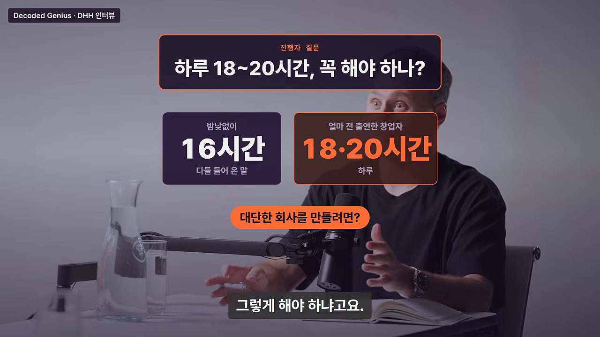
긴 시간이 결과를 바꾸지 않아요
예전보다는 생각이 조금 누그러졌대요. 더 오래 일하면 더 가까워진다고 믿는 건 내 노력의 힘을 믿는 거라 좋은 면도 있다는 거예요. 그래도 그는 그 믿음이 거의 모든 경우에 틀렸다고 봐요. 잠이 부족하거나 한 가지에만 매달리면 대부분은 오래 생산적일 수 없다는 연구가 많아요. 일론 머스크 같은 몇몇 예외만 빼고요.
에이전트 시대엔 더 그래요. 컴퓨터가 단순 반복을 대신해 주니, 사람이 더할 건 그 너머에 있어요. 푹 자고, 눈앞의 일 말고도 넓게 보고, 산책이나 샤워 중에 더 나은 아이디어를 얻는 게 중요해요. 좋은 아이디어 하나가 두 달짜리 고생을 건너뛰게 해 주거든요.
Grinding is for computers. They don't care.
갈아 넣는 일은 컴퓨터 몫이에요. 컴퓨터는 신경 안 써요.
— 원래 인터뷰 (이 영상 01:00:33 부근)
25년 이동평균, 주 40시간
물론 더 몰아칠 때도 있었어요. 하지만 그가 보는 건 장기 이동평균이에요. 지난 25년 동안 그의 평균은 주 40시간이었어요. 80시간인 주도 손에 꼽을 만큼 있었고, 더 적은 주도 있었고요.
그는 모든 게 멱법칙을 따른다고 말해요. 한 주에 사업에 쓰는 처음 10시간이 80시간에서 90시간으로 가는 10시간보다 훨씬 중요해요. 베이스캠프를 시작할 때 그는 학교와 다른 고객 일을 하느라 주 10시간밖에 못 썼어요. 그때가 인생에서 가장 생산적이었대요. 낭비할 시간이 없었으니까요. 80시간이 있으면 그 대부분을 쓸데없는 데 쓰게 된다고 해요.
실패에도 대비해야 해요
대부분의 사업은 실패하고, 대부분의 사람은 여러 번 실패해요. 20대부터 40대까지 쉬지 않고 갈아 넣어도 억만장자나 유니콘은 못 될 가능성이 커요. 그러니 더 높이 노리되, 실패했을 때 무엇이 남는지도 생각해야 한다는 거예요. 10년을 쏟았는데 무지개 끝에 금 항아리가 없다면, 사업이라는 다리 하나만 남은 의자에 앉게 돼요.
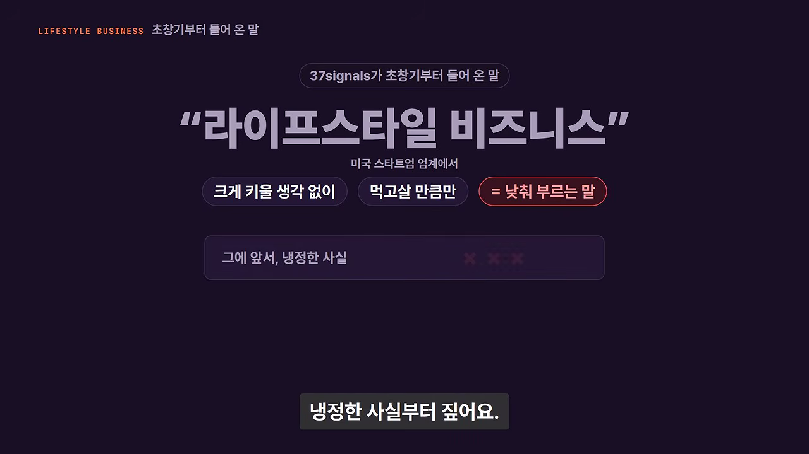
DHH는 사업에 전부 걸고 가족, 친구, 건강, 취미를 다 희생해야 진지한 거라는 생각을 '미국의 거대한 착각'이라고 불러요. 37signals는 초창기부터 라이프스타일 비즈니스를 한다는 비판을 들었어요. 룰렛의 검은색 12번에 전부 걸지 않았다는 이유로요. 그는 이 말을 칭찬으로 들었어요.
I have a lifestyle and I have a business. That sounds great.
저는 삶도 있고 사업도 있어요. 좋잖아요.
— 원래 인터뷰 (이 영상 01:05:03 부근)
그는 일이 아주 인간적인 거라고 봐요. AI가 풍요를 가져와 사람이 일할 필요가 없어지면 다들 예술가가 될 거라는 상상에도 반대해요. 그보다는 우울해질 거라고요. 사람은 재능을 써서 다른 사람과 함께 목표를 이루며 행복을 느끼니까요. 다만 그건 주 40시간으로도 충분하고, 남는 시간엔 가족과 친구와 취미를 누릴 수 있다는 게 그의 말이에요.
나에게 충분한 만큼
DHH는 일론 머스크처럼 사업에 모든 걸 거는 사람이 미국에 있다는 게 좋대요. 화성에 사람을 보내겠다는 꿈은 멋져요. 하지만 수천만 명이 그럴 재능도, 기질도, 운도 갖고 있지는 않아요. 대부분은 조금 더 소박한 야망과 화해해야 해요.
수만 명, 수십만 명의 고객을 모시는 좋은 사업을 만들어 괜찮은 삶을 누리는 것. 전용기 다섯 대와 화성행 로켓은 없어도요. 그는 큰 성공을 박수 치면서도, 대부분은 훨씬 적은 것으로 행복해야 한다고 말할 수 있기를 바라요.
그렇다고 모두가 적당히 사는 게 답이라고 단정하지는 않아요. 유럽은 어느 정도 그 실험을 해 왔는데, 장기적으로 유럽 경제가 썩 잘 풀리지 않았다고 인정해요. 그래도 개인으로서는 바꿀 생각이 없대요. 20년 넘게 라이프스타일 비즈니스로 베이스캠프를 키우며 수억 달러 매출을 내고, 가족과 삶을 누린 걸 내주지 않겠다는 거예요.
나에게 충분한 만큼
그는 자기에게 '충분한 만큼'을 찾는 걸 엄청난 선물이라고 불러요. 사람마다 다르대요. 그에게는 남 밑에서 9시부터 5시까지 일하는 걸로는 부족했어요. 내 사업을 하고 싶었고, 멋진 차를 사고, 레이스에 나가고 싶었어요. 그걸 다 얻었고, 억만장자는 못 됐지만 괜찮대요.
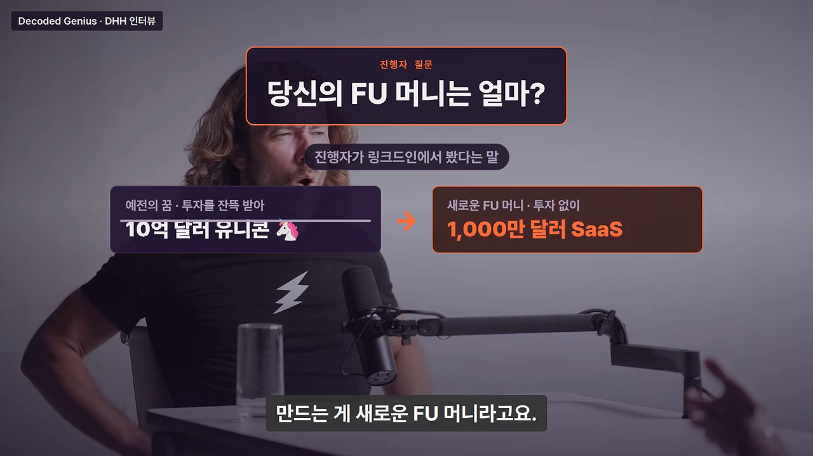
FU 머니는 얼마일까요?
진행자는 투자 없이 SaaS를 1,000만 달러까지 키우면 새로운 FU 머니라는 말을 꺼내요. DHH는 그 정도면 이미 인류 역사상 가장 부유한 사람들 반열이라고 답해요. 그는 예전엔 100만 달러면 된다고 생각했지만, 지금은 원하는 생활 방식에 달렸다고 봐요. 전용기가 필요하면 1,000만 달러도 모자라요. 그런 사치만 빼면 몇백만 달러, 그리고 마음에 드는 집을 대출 없이 갖는 정도면 충분하대요.
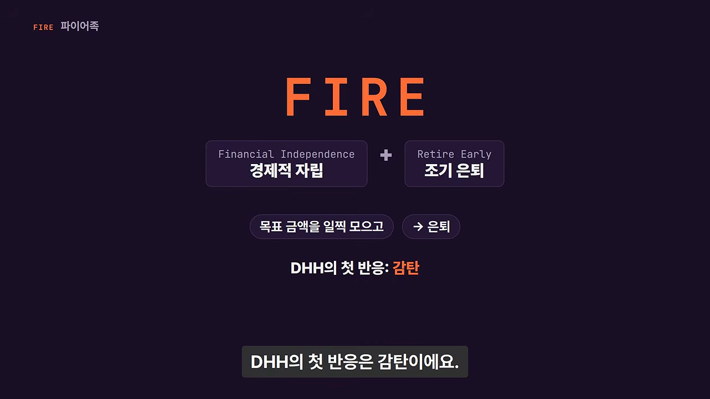
그는 목표 금액을 정해 열심히 모은 뒤 일찍 은퇴하는 FIRE 운동에는 착각이 있다고 봐요. 대부분은 은퇴해서 행복하지 않대요. 그가 만난 가장 불행한 사람 중엔 일찍 은퇴한 사람, 더 나은 아이디어도 없이 회사를 판 사람이 많았어요. 다음 회사도 쉽게 만들 줄 알았는데, 성공은 둘째치고 다시 열정을 쏟을 일을 찾는 것부터 어려웠대요.
그는 베이스캠프가 자기 인생 최고의 사업 아이디어이고, 그만한 건 다시 없을 거라고 현실적으로 봐요. 창업자는 자기가 남보다 낫다고 믿어야 시작할 수 있지만, 그게 좋은 아이디어가 끝없이 나온다는 착각으로 넘어가면 안 된다는 거예요. 평생 좋은 사업 아이디어 하나만 있어도 큰 행운이래요.
숫자에 닿은 다음
목표 숫자에 닿아도 삶이 기대만큼 바뀌지는 않아요. 베조스가 지분을 사 갔을 때 DHH의 통장은 거의 빈 상태에서 갑자기 수백만 달러가 됐어요. 그는 그 뒤로 모든 게 장밋빛일 줄 알았는데, 아니었대요. 그리고 이 말은 아무도 믿지 않는다고 덧붙여요. 그 자신도 겪기 전엔 안 믿었으니까요. 회사를 팔아도 월요일은 오고, 머릿속 악마들은 그대로 있어요. 물론 가난하고 불행한 것보다 부자이면서 불행한 게 훨씬 낫다고 웃으며 말해요.
그래도 FU 머니라는 마음가짐은 큰 힘이 됐대요. VC 돈을 받지 않은 것도 그 덕이에요. 남의 돈을 받으면 그 사람이 나쁜 생각을 들고 와도 꺼지라고 말할 수 없어요. 베조스에게도 그 부분은 팔지 않았어요. 그래서 그는 흥미로운 일에 시간을 쓰고, 누가 뭐라 할지 크게 걱정하지 않아요.
그는 위에 누군가가 있어야 한다면 거의 어떤 사업과도 자기 회사를 바꾸지 않겠대요. 그 '위'는 주식시장일 수도 있어요. 상장사를 이끄는 사람들은 투자자, 규제 당국, 훨씬 많은 직원에게 묶여 오히려 덜 자유롭다고 봐요. 독립은 잃기 전까지 값을 매기기 어렵다는 게 그의 말이에요.
열정은 노력을 따라와요
진행자는 창업자에게 열정이 꼭 필요하냐고 물어요. 좋아하는 건 돈이나 자동차고, 사업은 그걸 얻는 수단일 수도 있잖아요. 별로 좋아하지 않는 일로도 대단한 회사를 만들 수 있냐는 거예요.
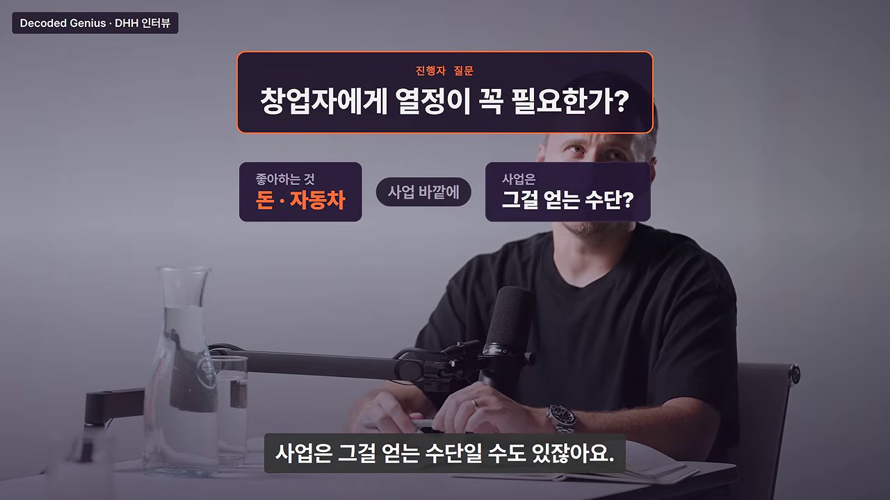
DHH는 할 수는 있지만 더 어렵다고 답해요. 그리고 자기 이야기를 꺼내요. 그는 비디오게임이 좋아서 컴퓨터에 빠졌어요. 열여덟 살의 그에게 중소기업용 협업 소프트웨어를 만들라고 했다면 지루해 죽겠다고 했을 거래요. 그런데 살다 보니 생산성 소프트웨어를 만드는 일과 루비 코드를 쓰는 일이 정말 좋아졌어요. 지금은 게임을 만들고 싶은 마음이 없대요.
열정은 노력을 따라와요
처음엔 별로 신나지 않아도, 깊이 파고들면 대부분의 분야는 재미있어요. 잘하려고 애쓰다 보면 사랑까지는 아니어도 들뜨게 돼요. 사업이 궤도에 오르기까지 7~10년이 걸리는 경우가 많으니, 어느 시점엔 그 일에 신이 나야 버틸 수 있다고 봐요. 꼭 만드는 일 자체가 아니어도 돼요. 고객이 기뻐하는 모습, 회사가 크는 모습, 직원을 챙기는 일처럼 보상 너머의 의미를 주는 무언가면 돼요.
Sometimes the passion follows the effort.
때로는 열정이 노력을 따라와요.
— 원래 인터뷰 (이 영상 01:18:27 부근)
역사를 보면 대부분은 가족을 먹여 살리려고 일했어요. 그렇다고 일이 의미 없었던 건 아니에요. 복권에 당첨되면 당장 그만두고 제트스키나 타겠다는 사람도 많아요. 하지만 DHH는 통계로 보면 복권 당첨자들이 여섯 달쯤 지나 약물과 파티에 빠지고, 2년 안에 파산하는 경우가 많다고 말해요. 사람들은 무엇이 자기에게 깊은 의미를 주는지 잘 모른다는 거예요.
그 자신도 프로그래밍을 늦게 시작했고 처음엔 잘하지 못했어요. 그래도 붙들고 있다 보니 자기만의 각도를 찾았고 잘하게 됐어요. 잘하게 되면 일이 더 재미있어져요. 그는 25년 동안 회사를 운영하며 비용 관리까지 좋아하게 됐대요. 경비 보고서를 훑으며 너무 많이 쓰는 곳을 찾는 게 즐겁다는 거예요. 열여덟 살의 그라면 미쳤냐고 했을 일이에요.
마지막 조언, 스토아 철학
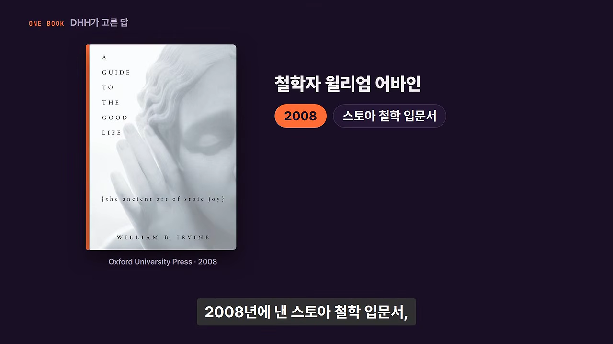
진행자가 지금 막 시작하는 창업자에게 딱 하나만 조언해 달라고 하자, 그는 『A Guide to the Good Life』를 읽으라고 해요. 이 인터뷰에서 말한 사고방식이 대부분 스토아 철학에서 왔대요. 부정적 시각화, 통제할 수 있는 것과 없는 것을 나누기, 밀려오는 파도를 견딜 정신력 키우기 같은 것들이에요.
그는 지난 걱정을 돌아보면 97%가 완전한 낭비였다고 말해요. 원래 불안한 기질도 아닌데 그랬대요. 스토아의 원칙과 습관을 몸에 익힌 게 거기서 벗어나는 데 가장 큰 도움이 됐어요. 이건 같은 상황을 훨씬 견디기 쉽게 만드는 마음의 도구예요. 누구에게나 쓸모 있지만, 스스로 높은 위험과 압박 속에 뛰어드는 창업자에게는 특히 그렇다는 게 그의 마지막 말이에요.